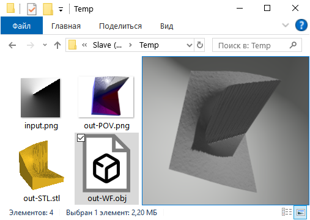

Pretty simple (well, it was initially) program that reads PNG image, and writes 3D mesh in POVRay format, using pixel X and Y coordinates for 'south' and 'east' position of 3D triangle mesh nodes, and, most important, pixel brightness as Z, that is, height of the node, thus converting image into sort of 3D landscape. After rendering POV scene thus obtained with POVRay (which is not just excellent, but also completely free 3D renderer) resulting image is obtained.
E. g., example image above was started as simple black and white drawing, converted to PNG, then some Gaussian Blur and maps added, and PNG fed to img2mesh.
Surely POVRay can import PNG and use them as 'heightfields' directly, but img2mesh uses rather unusual 'pyramid' conversion algorithm, providing extra quality for small heightfields.
img2mesh is equipped with easy to use GUI for selecting input and output files.
Default export to POV file suggests camera autofocus on object, object scaling to fit 1, 1, 1 cube, and suitable scene structuring for easy editing later.
Update: In version 2.8, beside complete rewriting of POVRay output, Wavefront OBJ and stereolithography STL export added.
Screenshot of Windows Explorer window with test source PNG map and resulting output preview:
There is a difference between POV, OBJ and STL output:
For Windows users, compiled Windows 64-bit exe file is available for download in Release section of GitHub. For other platforms, use Python sources - program is rather self-contained, you will find the only non-standard import (PyPNG) enclosed to download.
Step forward to img2mesh at GitHub for downloads.
Move back to main page.